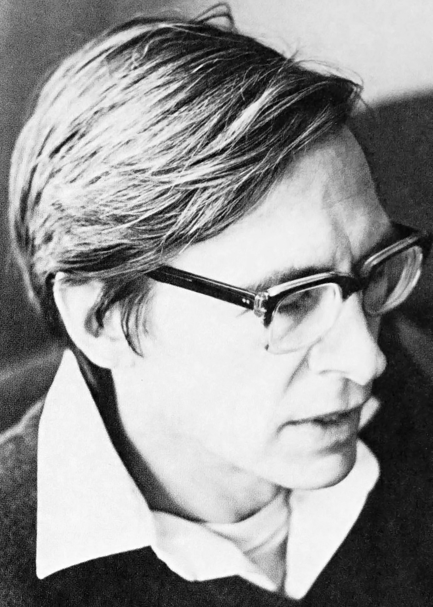

Politik: Biografi
John Rawls var en amerikansk filosof, der blev født den 21. februar 1921 i Baltimore, Maryland. Han voksede op i en velhavende familie og blev uddannet på Princeton University, hvor han studerede matematik og filosofi. Efter at have afsluttet sin uddannelse, tjente Rawls som officer i Anden Verdenskrig, hvorefter han vendte tilbage til USA og fortsatte med at studere filosofi.
Rawls blev senere ansat som lektor på Cornell University, hvor han begyndte at udvikle sin teori om social retfærdighed. I 1971 udgav han sin mest berømte bog, "A Theory of Justice", hvor han præsenterede sin tænkning om, hvordan en retfærdig samfundsstruktur skal være.
Rawls' teori byggede på ideen om en "skygge af uvidenhed", hvor individerne i et samfund ikke ved, hvilken samfundsklasse de tilhører, når de skal opbygge denne struktur. På denne måde kunne Rawls argumentere for, at individerne ville vælge den struktur, der ville være mest gavnlig for alle, uanset deres sociale status.
Rawls' teori blev modtaget med stor interesse og anerkendelse i fagkredse og blev senere også anvendt i politiske debatter om lighed og retfærdighed. Rawls fortsatte med at skrive og undervise indtil sin død i 2002, hvor han blev husket som en af de mest indflydelsesrige filosoffer i det 20. århundrede.
Anthony Downs var en amerikansk politisk økonom og forfatter, der er mest kendt for sin teori om "medianvælgeren". Han blev født den 8. maj 1930 i Chicago, Illinois, og voksede op i det midtvestlige USA.
Downs studerede økonomi på University of Chicago, hvor han senere også underviste. Han er mest kendt for sin bog "An Economic Theory of Democracy" fra 1957, hvor han introducerer sin teori om medianvælgeren. Ifølge Downs' teori er det medianvælgeren – altså den vælger, der befinder sig i midten af vælgermassen – der har den største indflydelse på valgresultatet, da politikere vil forsøge at appellere til denne gruppe for at få flest mulige stemmer.
Downs har også skrevet om emner som urban planlægning, transport og miljø. Han har modtaget flere priser og udmærkelser for sin forskning, herunder den prestigefyldte John Simon Guggenheim Foundation Fellowship og den amerikanske regerings National Medal of Science.
Downs var også aktiv i offentlig debat, og har skrevet om emner som våbenkontrol, sundhedspolitik og udenlandsk politik. Han døde den 3. februar 2021, men har efterladt sig en stor arv inden for politisk økonomi og samfundsvidenskab. Han vil blive husket som en pioner inden for undersøgelsen af valgadfærd og politisk økonomi.

Robert Dahl (født 1915, død 2014) var en amerikansk politolog, der især er kendt for sin forskning og skrivning om demokrati og politiske systemer. Han var professor emeritus ved Yale University og blev betragtet som en af de mest indflydelsesrige politologer i sin tid.
Dahl voksede op i Inland Empire i Californien og studerede politik ved University of California, Berkeley, hvor han også tjente sin Ph.D. i politik i 1940. Efter at have tjent i Anden Verdenskrig vendte han tilbage til Berkeley, hvor han arbejdede som assistentprofessor i politik. I 1950'erne flyttede han til Yale University, hvor han fortsatte med at undervise og forskning inden for demokrati og politiske systemer.
Dahl er især kendt for sin teori om polycentrisk demokrati, der fokuserer på magtdelingen i et demokratisk samfund. Han argumenterede for, at et demokrati er stærkere, når der er flere magtcentre, der kan kontrollere hinanden, frem for at have en enkelt central magt, der kan udøve for meget kontrol. Han skrev også om emner som majoritetsregler, kompromis og politisk beslutningstagning.
Dahl er også kendt for sin kritik af autoritære regimer og har skrevet om emner som diktatur, revolutioner og politisk magtudøvelse. Han modtog flere priser for sin forskning, herunder American Political Science Association's James Madison Award og American Academy of Arts and Sciences' Hubert H. Humphrey Civil Rights Award.
I løbet af sin karriere skrev Dahl mange bøger, herunder "Who Governs?", "Democracy and Its Critics" og "On Political Equality". Hans værker er blevet oversat til mange sprog og er blevet brugt som tekstbøger i politikuddannelser verden over. Dahl døde i 2014, men hans indflydelse på politologifeltet lever videre.